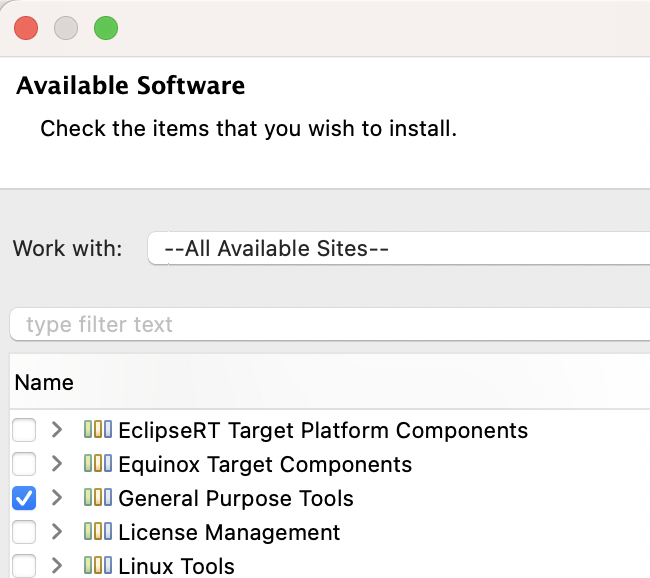
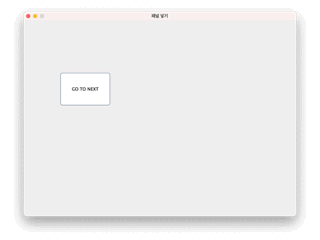

이클립스 자바 스윙 윈도우 빌더 설치
- Help >> Install new Software >> –All Available Sites– >> General Purpose Tools 설치

- 이클립스 재실행
윈도우 빌더로 레이아웃 만들기
- 패키지 우클릭 >> other >> WindowBuilder >> Swing Designer >> Application Window
- Class name 입력
- 좌측 하단의 Design 탭을 클릭한 후 디자인
버튼을 클릭하면 Pane을 나타내고, 숨기는 기능 구현

- AbsoluteLayout 버튼 끌어다 JFrame에 드랍하면 absolute layout 적용됨
- 화면 크기, 타이틀, 위치, 크기 변경 금지는 코드로 바로 입력
private void initialize() {
frame = new JFrame();
frame.setTitle("패널 넣기");
frame.setBounds(100, 100, 800, 600);
frame.setLocationRelativeTo(null); // 화면 중앙에 위치
frame.setResizable(false); // 크기 변경 금지
frame.setDefaultCloseOperation(JFrame.EXIT_ON_CLOSE);
frame.getContentPane().setLayout(null); // absolute layout
}- panel 추가 >> 패널에도 absolute layout 적용. (왼쪽 컴포넌트의 패널 위에 드랍하는 게 딜레이가 적음)
- 버튼 추가: 변수명, 텍스트, 크기, 위치 변경
- 버튼 우클릭 >> Add event handler >> action >> actionPerformed
package guiProject;
import java.awt.EventQueue;
import javax.swing.JFrame;
import javax.swing.JPanel;
import javax.swing.JButton;
import java.awt.event.ActionListener;
import java.awt.event.ActionEvent;
public class StudySwing {
private JFrame frame;
/**
* Launch the application.
*/
public static void main(String[] args) {
EventQueue.invokeLater(new Runnable() {
public void run() {
try {
StudySwing window = new StudySwing();
window.frame.setVisible(true);
} catch (Exception e) {
e.printStackTrace();
}
}
});
}
/**
* Create the application.
*/
public StudySwing() {
initialize();
}
/**
* Initialize the contents of the frame.
*/
private void initialize() {
frame = new JFrame();
frame.setTitle("패널 넣기");
frame.setBounds(100, 100, 800, 600);
frame.setLocationRelativeTo(null); // 화면 중앙에 위치
frame.setResizable(false); // 크기 변경 금지
frame.setDefaultCloseOperation(JFrame.EXIT_ON_CLOSE);
frame.getContentPane().setLayout(null);
JPanel endPage = new JPanel();
endPage.setBounds(0, 0, 794, 566);
frame.getContentPane().add(endPage);
endPage.setLayout(null);
JButton btnBefore = new JButton("GO TO LAST");
btnBefore.setBounds(500, 150, 150, 100);
endPage.add(btnBefore);
JPanel startPage = new JPanel();
startPage.setBounds(6, 0, 788, 566);
frame.getContentPane().add(startPage);
startPage.setLayout(null);
btnBefore.addActionListener(new ActionListener() { // startPage 보이게
public void actionPerformed(ActionEvent e) {
startPage.setVisible(true);
endPage.setVisible(false);
}
});
JButton btnNext = new JButton("GO TO NEXT"); // endPage 보이게
btnNext.addActionListener(new ActionListener() {
public void actionPerformed(ActionEvent e) {
endPage.setVisible(true);
startPage.setVisible(false);
}
});
btnNext.setBounds(100, 150, 150, 100);
startPage.add(btnNext);
endPage.setVisible(false); // 시작할 때 endPage가 안 보이도록 설정
}
}